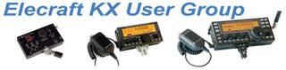
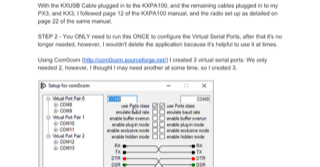
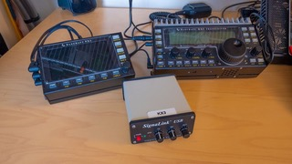

Hi Mike,USB Sound Adapter:I think you can use a simple dongle as your audio interface on the KX3. From the Elecraft users group:"I'll echo those that don't use the SignalLink. Just go direct from the KX3 into the soundcard. In my case, I have a small USB sound card that I use both on the PC and the Pi.
https://www.amazon.com/dp/B00IRVQ0F8?psc=1&ref=ppx_yo2_dt_b_product_details
The mic and phones jack on the KX3 connect to the sound card speakers and mic. (Output of the KX3, phones; is input to the sound card, mic. similarly KX3 mic get's it's input from the sound speaker jack)
Then use the KXUSB cable (the same one you use to connect to the KX3 utility program), to the PC. Note the Com assignment. Set that com in WSJTX and select KX3 as the radio, and good to go.
Works great and you don't need to carry around a Signallink on an activation. Internal computer sound card works well also. PTT is more reliable than VOX (IMHO). 73 Don KI5AIU”



On Jun 6, 2025, at 8:04 AM, Mike Flowers via Chat <chat@ncdxc.org> wrote:_______________________________________________Hi Folks,
I've recently helped my friend Mike W6MM get his General ticket and his vanity callsign.
Yesterday we put up his G5RV as an inverted vee. I've lent him my KX3 and we've had some QRP QSOs.
I'd like to get him running on FT-8 with the KX3. Does anyone have any experience doing this or can you direct me to some information on this? I'm thinking the KX3 has sufficient audio isolation to allow direct connection to a PC or laptop, but I'm not sure and the manual is a bit vague on this.
I will admit that I'm a bit preoccupied with my own Windows 11 PC upgrade in the shack at the moment.
Thanks in advance for any assistance!
Mike Flowers, K6MKFemail: k6mkf@hotmail.comK6MKF: http://www.qrz.com/db/K6MKFW6NAG: http://www.qrz.com/db/W6NAGMaui Rentals: http://www.waiohuli.comNHHS'64 60TH: http://www.waiohuli.com/nhhs64.htm
Chat mailing list
Chat@ncdxc.org
http://mail.ncdxc.org/mailman/listinfo/chat_ncdxc.org